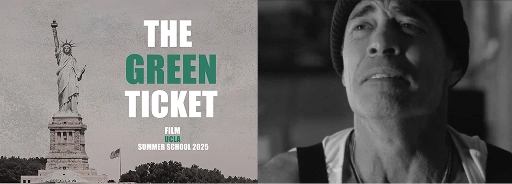

The Green Ticket
A short drama about the fragile security of immigrant life. When an ICE raid interrupts an ordinary working day, a green card becomes a symbol of survival — and of everything it cannot protect.
Watch the film- Role
- Producer
Production Coordinator & Post-production Supervisor - Context
- UCLA Film Production Summer Program
- Duration
- July – August 2025 · 6 weeks
- Focus
- Production planning, cross-department coordination & post-production delivery